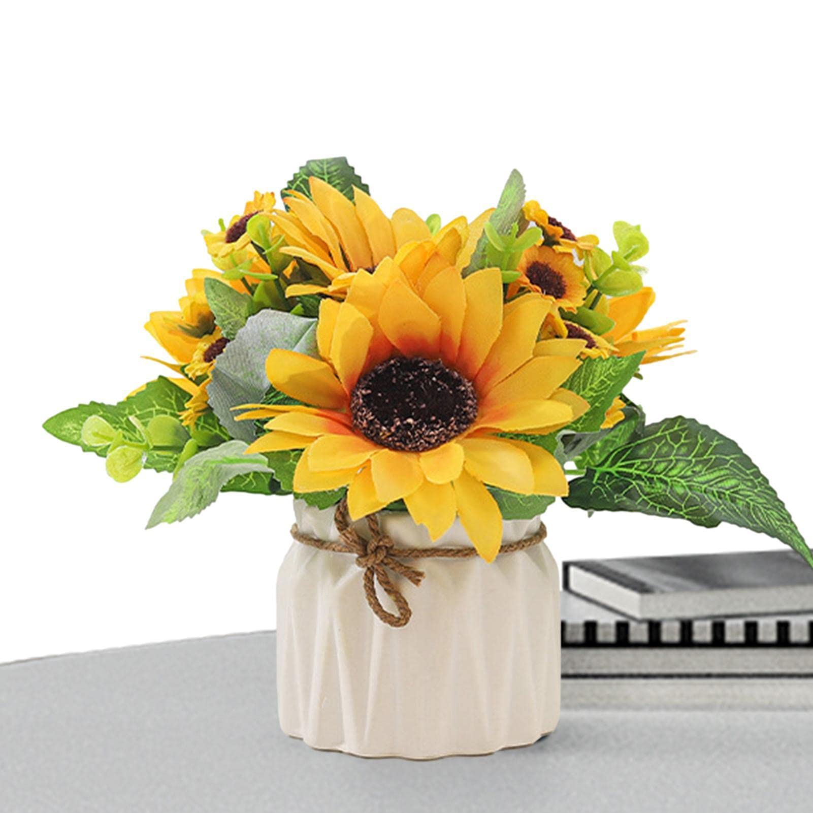

El símbolo de la felicidad y la energía positiva.
Descubre por qué son el producto estrella de esta temporada.
Aquí encontrarás todo lo relacionado con nuestros productos de temporada.
Los girasoles son una de las flores más queridas y reconocibles en todo el mundo. Su color amarillo brillante y su capacidad para seguir la luz del sol los convierte en un símbolo de alegría y positividad.
En nuestro blog, exploraremos diferentes aspectos de los girasoles, desde su cultivo hasta su uso en arreglos florales y decoraciones. ¡No te lo pierdas!